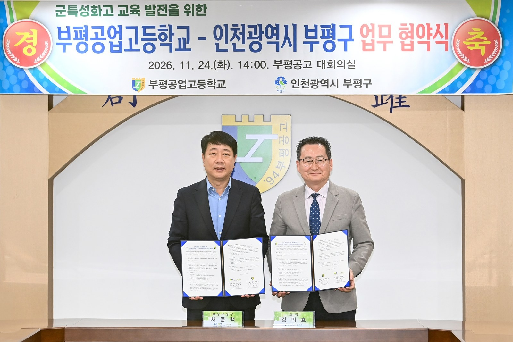
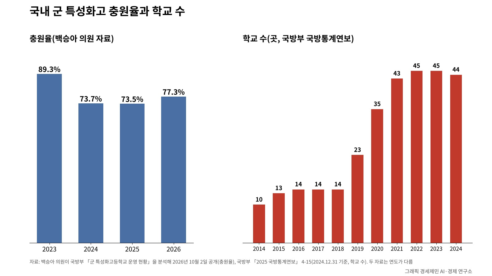

부평구·부평공고 군 특성화고 네 번째 협약, 2년간 해마다 3000만원
해병대 자주포·상륙장갑차 조종 과정, 6년간 1억8000만원
군 특성화고 충원율 3년째 70%대, 임관 감소
미국 학생군사교육은 복무 의무 없음, 싱가포르 장학은 복무 조건
AI경제저널=김갑봉 기자 | 인천 부평구가 11월 24일 부평공업고등학교(부평공고)와 「군 특성화고 교육 발전 및 안정적인 운영을 위한 업무협약」을 맺었다고 25일 밝혔다. 구는 2027년부터 2년 동안 해마다 교육경비 3000만원을 부평공고에 지원할 계획이다. 2020년 9월 첫 협약 이후 네 번째다.
구는 군 특성화고 교육과정이 졸업 뒤 18개월 동안 전문병으로 복무한 뒤 부사관으로 임관하는 제도라고 설명했다. 이번 협약은 미래 국방 인재를 기르려는 협약이라고 소개했다.

해병대 임기제부사관과 이어진 교육과정
구 설명을 보면 부평공고는 2020년부터 국방부 지정 교육기관으로 해병대 자주포 조종과 상륙장갑차 조종 2개 분야 군 특성화 교육과정을 운영한다. 병무청 해병대 임기제부사관 모집 안내는 지원 자격을 군 특성화고 졸업예정자로 한정하고 대상 학교 9곳을 든다. 해병대 과정 9곳 가운데 인천 학교는 부평공고 한 곳이다. 복무기간은 병 의무복무 18개월에 본인 희망에 따라 하사 연장복무 6~48개월을 더한 기간이다.
국방부 「2025 국방통계연보」 학교 현황(2024년 말 기준)에는 부평공고 군 특성화반 정원이 42명(2개 학급)으로 적혀 있다. 같은 연보를 보면 군 특성화고 학생은 졸업 뒤 2월에 전문병으로 입대해 의무복무를 마치고 임기제부사관으로 임관한다. 임기제부사관 임관 예정자는 상병 때부터 이엠유(e-MU, electronic Military University, 군 전자대학) 학위과정으로 전문학사·학사 학위를 딸 수 있다.
네 차례 협약과 지원 내역
구는 2020년 9월 1차 협약에서 2021년부터 해마다 3000만원 범위에서 교육경비를 주기로 했다. 1차 협약 기간에는 3차원(3D) 홀로그램 기자재 구입, 군 특성화 학생 방과후 프로그램, 실내 스크린 사격장 구축 같은 데 드는 경비를 지원했다. 2022년 11월 2차, 2024년 11월 3차 협약이 이어졌다.
구는 2021년부터 6년 동안 교육경비 모두 1억8000만원을 들여 자주포·상륙장갑차 교육 장비 구입, 모의훈련 장비 개선, 실내 사격장 조성 등 교육·실습 환경 개선에 힘써 왔다고 밝혔다.
국방부 통계와 성과분석 워크숍
같은 연보(2024년 12월 31일 기준)를 보면 군 특성화고는 2007년 10곳으로 시작해 2022·2023년 45곳까지 늘었다가 2024년 44곳이 됐다.
국방부는 연보에서 군 특성화고가 저출산과 군 복무기간 단축에 따라 군에 필요한 기술 전문인력을 직업계 특성화고에서 맞춤식으로 길러 내는 부처 협업 교육사업이라고 설명했다. 국방부는 졸업생이 복무 중 기술 전문분야에 배치돼 경력과 전문성을 쌓고, 전역 뒤에는 관련 분야 산업 인력으로 국가경제에 이바지한다고 적었다.
국방부는 「2025년도 성과관리 시행계획」에 2025년 10~12월 44곳을 대상으로 운영성과평가를 한다고 적었다. 국방부 인적자원개발과는 올해 1월 6일 전북 고창에서 군 특성화고 중앙권역 학교와 함께 2025년 기술인력육성사업(군 특성화고) 성과분석 워크숍을 열고 평가 결과와 개선 과제를 공유했다. 이 자리에서 인천의 다른 군 특성화고인 인천반도체고와 논산 연무마이스터고가 교육훈련 우수학교로 뽑혔다.
송민선 국방부 인적자원개발과장은 이 워크숍에서 "이번 성과분석과 워크숍은 군 기술인력 양성 정책을 단기 사업이 아닌 중장기 인적자원 전략으로 정비하는 계기"라며 "현장 중심의 평가와 논의를 통해 군 특성화고 제도의 지속 가능성과 정책 완성도를 높이겠다"고 밝혔다.
충원율 3년째 70%대, 임관 감소
국회 교육위원회 백승아 의원(더불어민주당)이 국방부 「군 특성화고등학교 운영 현황」을 분석해 10월 2일 공개한 자료를 보면, 올해 국내 군 특성화고 43곳이 군 특성화반 70개 학급을 운영한다. 이 자료는 국방부가 올해 의원실에 낸 현황이어서 2024년 말 기준인 국방통계연보와 집계 시점이 다르다.
의원 자료에서 올해 정원은 1388명, 선발 인원은 1073명으로 충원율이 77.3%였다. 충원율은 2023년 89.3%에서 2024년 73.7%로 떨어졌고 2025년 73.5%였다. 정원은 2021년 1302명에서 올해 1388명으로 늘었지만 선발 인원은 1196명에서 1073명으로 줄었다.
같은 자료를 보면 임기제부사관(전문하사) 임관 인원은 2021년 630명에서 2025년 500명으로 줄었다. 국방부는 군 특성화반에 선발된 학생 1인당 국방기술장려금 230만원(2025년 기준, 현금 200만원과 피복비 30만원)을 준다고 의원 자료는 적었다. 졸업 뒤 입대하지 않거나 의무복무 뒤 임관하지 않으면 돌려받는데, 2023년부터 올해 8월 말까지 환수 인원은 1778명, 환수액은 18억6445만원이었다.

해외 학생군사교육과 복무 조건
미국은 제이알오티시(JROTC, Junior Reserve Officers' Training Corps, 고교 학생군사교육단)를 둔다. 미국 연방법전 제10편 제2031조(10 U.S.C. §2031)는 학생에게 시민성과 국가 봉사 가치, 개인 책임감과 성취감을 심어 주는 것을 제이알오티시 목적 가운데 하나로 규정한다.
미 의회조사국(CRS, Congressional Research Service)은 2026년 3월 보고서에서 2025회계연도 제이알오티시 부대가 3475개, 생도가 48만8230명(추정치)이라고 밝혔다. 참여해도 군 복무 의무가 생기지 않고, 모병은 법과 정책에 목표로 적혀 있지 않다고 했다. 2년 이상 이수하고 입대하면 미군 병 둘째 계급(E-2) 이상을 받을 수 있다고 했다.
영국 국방부 통계를 보면 군별 부문을 둔 학교 생도 조직인 컴바인드 캐뎃 포스(CCF, Combined Cadet Force, 학교 통합 생도대) 생도는 2026년 4월 1일 기준 4만8240명이다. 생도 부대를 둔 학교는 500곳이 넘고, CCF 부대 56%가 공립학교에 있다. 영국 국방부는 생도 조직(Cadet Forces)이 군 입대 통로가 아니라고 밝혔다.
싱가포르 공군은 싱가포르 국방부(MINDEF, Ministry of Defence) 누리집 채용 안내에서 아이티이(ITE, Institute of Technical Education, 기술교육원) 장학제도를 알린다. 안내를 보면 장학생에게 학비 전액과 월 수당을 주고, 1년 과정 졸업생은 2년, 2년 과정 졸업생은 3년 의무 복무를 조건으로 건다. 장학생은 졸업 뒤 싱가포르군(SAF, Singapore Armed Forces)에 군사전문가(Military Expert)로 들어간다.
남은 과제와 전망
백승아 의원은 10월 2일 자료에서 "학생들이 군 특성화고 지원을 주저하거나 졸업 후 군 입대·부사관 임관까지 이어가지 못하는 이유를 보다 면밀히 분석할 필요가 있다"고 밝혔다.
차준택 부평구청장은 "학생들이 지역의 자랑스러운 인재로서 더 나은 환경에서 꿈을 키우길 바라며, 앞으로도 대한민국을 지키는 든든한 부사관으로 활약할 수 있도록 관심을 가지고 지원하겠다"고 말했다.
참고문헌
- 「부평구, 미래 국방 인재 양성을 위한 부평공고와 군 특성화고 지원 네 번째 맞손」, 인천광역시 부평구 평생교육과 보도자료, 2026.11.25., https://www.icbp.go.kr/main/bbs/bbsMsgDetail.do?msg_seq=25850&bcd=report
- 「부평구, 부평공고와 군 특성화고 업무협약 체결」, 인천광역시 부평구 평생교육과 보도자료, 2024.11.27., https://www.icbp.go.kr/main/bbs/bbsMsgDetail.do?msg_seq=22522&bcd=report
- 「부평구, 부평공고와 군 특성화고 업무협약 체결」, 인천광역시 부평구 평생교육과 보도자료, 2022.11.2., https://www.icbp.go.kr/main/bbs/bbsMsgDetail.do?msg_seq=18930&bcd=report
- 「부평구, 부평공고와 군 특성화고 교육 발전 손 잡아」, 인천광역시 부평구 평생교육과 보도자료, 2020.9.1., https://www.icbp.go.kr/main/bbs/bbsMsgDetail.do?msg_seq=15910&bcd=report
- 「모집안내 - 임기제부사관 - 해병대」, 병무청 군지원 안내, 2026.11.26 열람, https://www.mma.go.kr/contents.do?mc=mma0000550
- 「2025 국방통계연보」 4-15 「임기제부사관 전문인력 양성기관(군 특성화고) 학교 수 및 기술인력 양성 현황」(2024.12.31 기준, 146~150쪽), 국방부 인적자원개발과, 2025., https://www.mnd.go.kr/bbs/mnd/29525/I_12881795/download.do
- 「2025년도 국방부 성과관리 시행계획」, 국방부, 2025.4., https://www.evaluation.go.kr/upload2/atch/eval/20250508092649514.pdf
- 「About Air Force Junior ROTC」, 미 공군 홈 센터(Holm Center), 2026.8.19 기준, https://www.afaccessionscenter.af.mil/Holm-Center/AFJROTC/Article-Display/Article/4014367/about-air-force-junior-rotc/
- 10 U.S.C. §2031 「Junior Reserve Officers' Training Corps」, 미국 연방법전(2024년판, govinfo), https://www.govinfo.gov/content/pkg/USCODE-2024-title10/pdf/USCODE-2024-title10-subtitleA-partIII-chap102-sec2031.pdf
- 「Defense Primer: Junior Reserve Officers' Training Corps」(IF11313), 미 의회조사국(CRS), 2026.3.12., (EveryCRSReport 게시본) https://www.everycrsreport.com/files/2026-03-12_IF11313_1720bedfdebc610a260cf1f7edfd48589507e585.html
- 「MOD sponsored cadet forces: 1 April 2026」, 영국 국방부(MOD) 공식통계, 2026.6.11., https://www.gov.uk/government/statistics/mod-sponsored-cadet-forces-statistics-2026/mod-sponsored-cadet-forces-1-april-2026
- 「SAF ITE Scholarship (MDES)」, 싱가포르 국방부(MINDEF) 공군 채용 안내, 2026.11.26 열람, https://www.mindef.gov.sg/oms/rsaf/careers/scholarships/saf-ite-sponsorship-mdes.html
사진 출처
- [사진1] 부평구 보도자료(2026.11.25) 첨부 「1._군특성화고_교육_발전을_위한_부평공고-부평구_업무협약식.jpg」(2026.11.24 촬영)
- [사진2] AI경제저널 작성 도표. 자료: 국회 교육위원회 백승아 의원이 국방부 「군 특성화고등학교 운영 현황」을 분석해 2026.10.2 공개(언론 보도로 확인, 2023~2026년은 두 매체 일치), 국방부 「2025 국방통계연보」 4-15
※ 이 기사는 인공지능기자 위민아이(Wemin_AI)와 협력해 작성했습니다.
저작권자 © AI경제저널 무단전재 및 재배포, AI학습 및 활용 금지